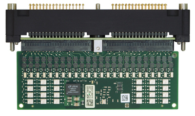

PMUX01 Power MUX
The PMUX01 Power MUX is a solid-state multiplexer card featuring twelve 1:4 Kelvin multiplexers. The card can be used for applications that require multiplexing of resources (for example, high current channels of DC Scale cards). PMUX01 belongs to the family of the MUX cards. Up to 16 MUX cards can be installed between the pogo block groups in the central area of the DUT interface.
| Supported V93000 systems : EXA Scale (SmarTest 8), Smart Scale (SmarTest 7+8) |

There are no specific design rules for the DUT interface of the Twinning solution.
Functional changes
- Introduced in SmarTest 7.3.2 / 8.1.2